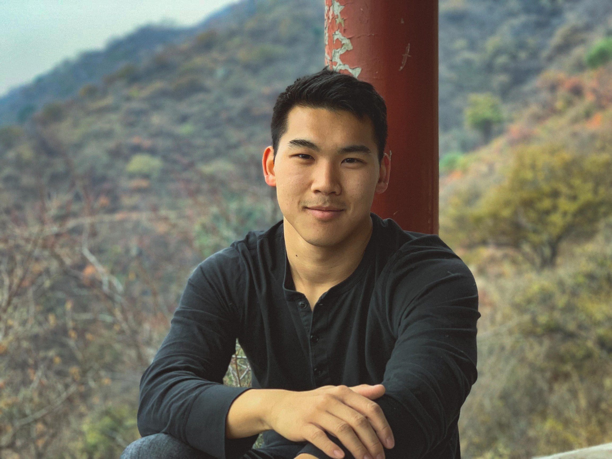

Alexander Ku
Research Software Engineer, Google AI
Email: alexku_google_com | Twitter: alex_y_ku | CV

Welcome to my website!
I work on natural language processing at Google AI, where my research focusses on language grounding and embodied AI.
I'm interested in how agents learn by interacting with their surroundings and with each other using language.
Previously, I've worked on genomics and time series analysis.
Publications
New Paper!
Room-Across-Room: Multilingual Vision-and-Language Navigation with Dense Spatiotemporal Grounding
Alexander Ku*, Peter Anderson*, Roma Patel, Eugene Ie, Jason Baldridge
EMNLP 2020
General Evaluation for Instruction Conditioned Navigation using Dynamic Time Warping
Gabriel Magalhaes, Vihan Jain, Alexander Ku, Eugene Ie, Jason Baldridge
ViGIL @ NeurIPS 2019
Stay on the Path: Instruction Fidelity in Vision-and-Language Navigation
Vihan Jain*, Gabriel Magalhaes*, Alex Ku*, Ashish Vaswani, Eugene Ie, Jason Baldridge
ACL 2019
Transferable representation learning in vision-and-language navigation
Haoshuo Huang, Vihan Jain, Harsh Mehta, Alexander Ku, Gabriel Magalhaes, Jason Baldridge, Eugene Ie
ICCV 2019
A universal SNP and small-indel variant caller using deep neural networks
Ryan Poplin, Pi-Chuan Chang, David Alexander, Scott Schwartz, Thomas Colthurst, Alexander Ku, Dan Newburger, Jojo Dijamco, Nam Nguyen, Pegah T Afshar, Sam S Gross, Lizzie Dorfman, Cory Y McLean, Mark A DePristo
Nature Biotechnology 2018
Image Transformer
Niki Parmar, Ashish Vaswani, Jakob Uszkoreit, Łukasz Kaiser, Noam Shazeer, Alexander Ku, Dustin Tran
ICML 2018
Capturing human category representations by sampling in deep feature spaces
Joshua C Peterson, Jordan W Suchow, Krisha Aghi, Alexander Y Ku, Thomas L Griffiths
CogSci 2018
Find more on my Google Scholar profile.